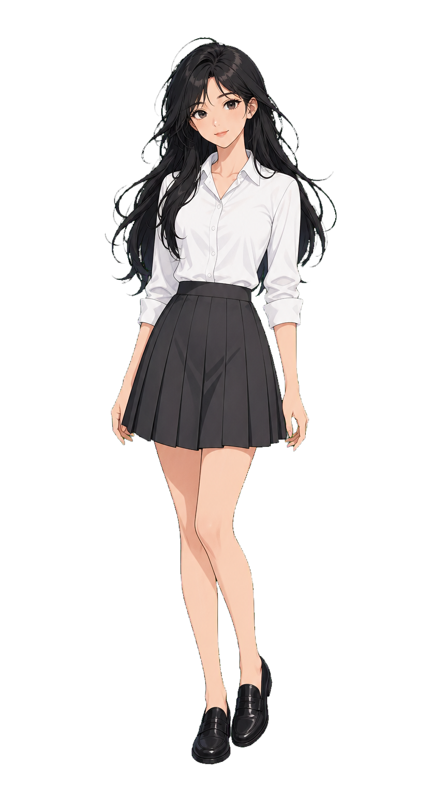
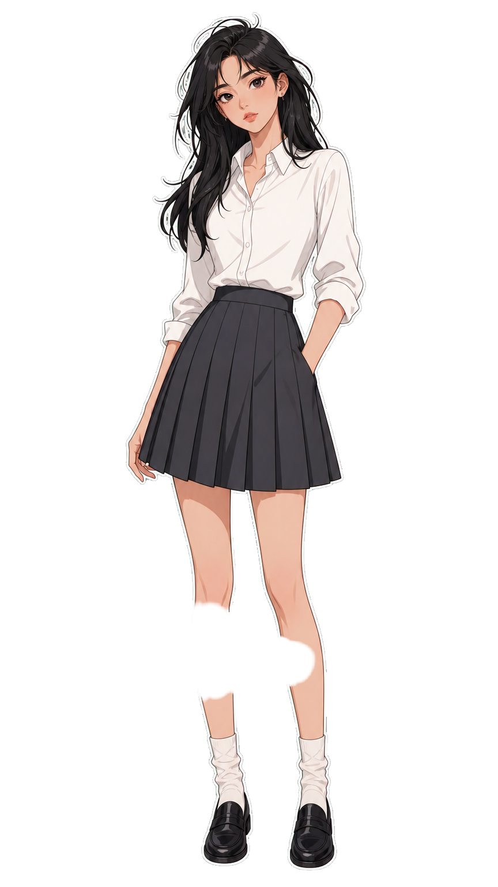
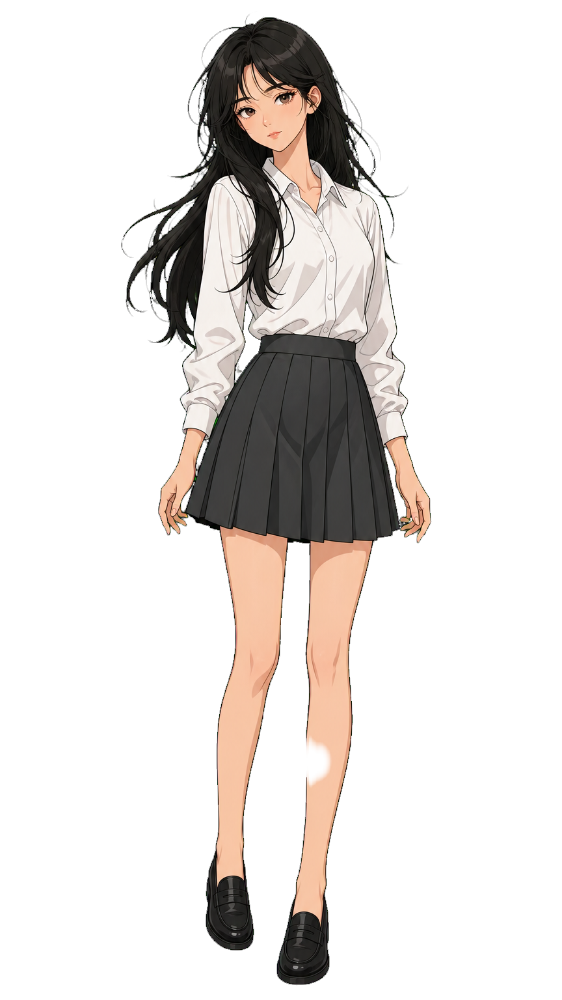
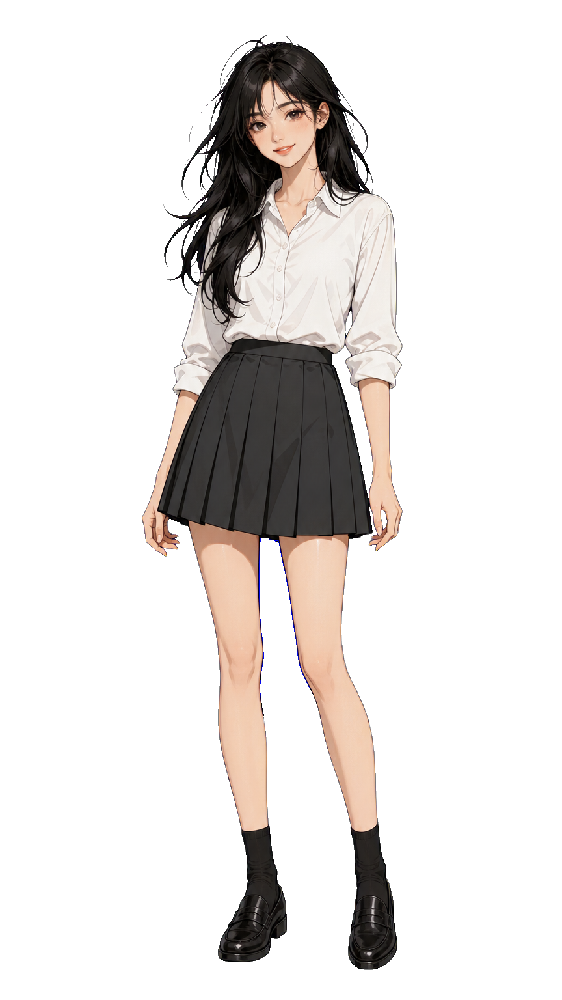

wispy_black_hair_white_blouse
原 montage当前绿幕
当前生产基线：纯 #00FF00 绿幕，无白边。
黑底光晕16.66破洞%3.62绿边1.18蓝边0.35白边%0.42连通度1.00

白边绿幕
旧方案：人物外轮廓 1-2px 纯白描边，重点看黑底白边。
黑底光晕59.61破洞%0.77绿边0.36蓝边0.02白边%46.22连通度0.94

深色轮廓
推荐候选：把边界增强改成风格内深色线稿。
黑底光晕11.46破洞%0.68绿边1.43蓝边0.03白边%0.02连通度1.00

蓝幕
潜力方案：蓝幕 + blue-key 后处理，重点看蓝 spill 和缺口。
黑底光晕13.18破洞%1.67绿边0.02蓝边7.78白边%0.72连通度1.00
